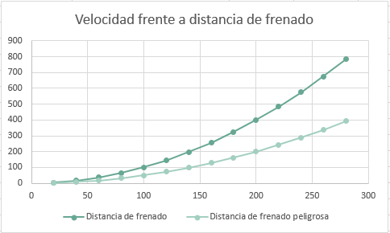

Para prevenir accidentes necesitamos medidas de seguridad y en esta pagina te presentaremos algunas:
- Saber la masa y las dimensiones de nuestro vehículo: Esto ayuda saber cuándo frenar con una distancia favorable, para evitar accidentes automovilísticos.
- Usar siempre el cinturón de seguridad: Usar el cinturón de seguridad no significa que valla a pasar algo siempre que lo tengas puesto, este solo te ayuda a que si por alguna razón ocurriera algo te protegiera y salvara tu vida.
- Conducir en condiciones óptimas: Esto es sumamente importante para evitar accidentes, ya que si conduces en un estado de alcoholismo es probable que produzcas un accidente.
- Respetar las señales de tráfico: Estas señales no están de adorno, si no al contrario estas ayudan a controlar el tráfico y los accidentes, así que nosotros pensamos que si nos pasamos una señal o un semáforo no pasa nada, pero puede ser que sea todo lo contrario.
- Evitar excesos de velocidad en la carretera: Muchas veces cuando vamos manejando excedemos la velocidad y eso es peligroso, entonces si no queremos accidéntenles ahí que evitar hacerlo.
- No usar el teléfono en carretera: El teléfono es un distractor estes manejando o no y si lo usamos cuando vamos manejando es un riesgo para nuestra vida y para la de otros.
